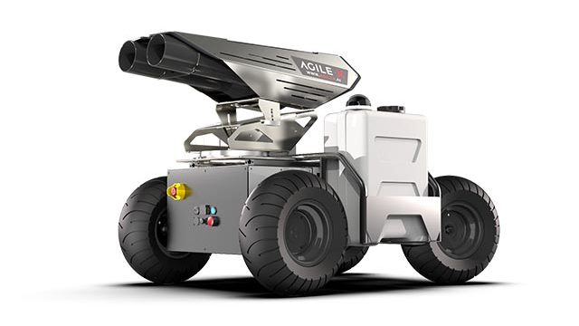
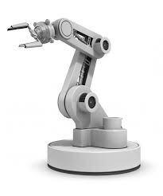
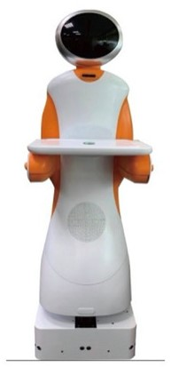
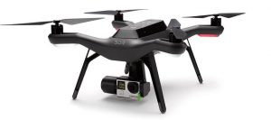
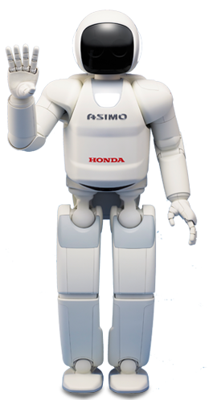
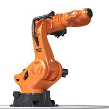
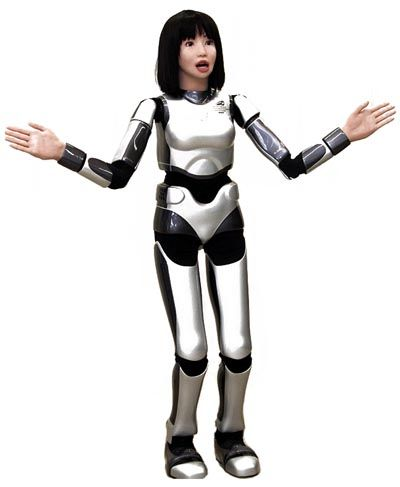
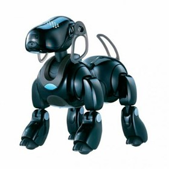

Inicio › Robótica
RobóticaLas cuatro generaciones de robots
Publicado el 8 de octubre de 2026 · Lectura de 5 min

La palabra robot apareció en 1920 en la obra de teatro R.U.R. del escritor checo Karel Čapek, y viene del checo robota, "trabajo forzado". Un siglo después, los robots han pasado de ser ciencia ficción a estar en fábricas, hospitales y salones. Para entender su evolución se suelen agrupar en cuatro generaciones.
Clasificación por generaciones
| Generación | Cómo funciona |
|---|---|
| 1ª · Manipuladores | Brazos mecánicos con un control muy simple: los maneja una persona o siguen una secuencia fija de movimientos. |
| 2ª · Robots de aprendizaje | Un operario les "enseña" moviéndolos a mano; el robot memoriza ese recorrido y lo repite. |
| 3ª · Control por ordenador | Un ordenador ejecuta un programa y envía las órdenes de movimiento. Basta con cambiar el programa para cambiar la tarea. |
| 4ª · Robots inteligentes | Incorporan sensores que informan al ordenador de lo que ocurre a su alrededor, de modo que pueden tomar decisiones en tiempo real. |




Clasificación según su forma
Además de por su "edad", los robots se clasifican según su arquitectura, es decir, según cómo es su cuerpo:
- Poliarticulados: brazos fijos con varias articulaciones. Son los típicos de las cadenas de montaje de coches.
- Móviles: se desplazan sobre ruedas u orugas y se guían con sensores. Por ejemplo, los robots que mueven estanterías en los almacenes.
- Androides o humanoides: imitan la forma del cuerpo humano. Su gran reto es caminar sobre dos piernas sin perder el equilibrio.
- Zoomórficos: imitan a animales, como los robots con cuatro patas capaces de moverse por terrenos irregulares.



Las tres leyes de Asimov
El escritor Isaac Asimov propuso en 1942 tres leyes que, aunque nacieron en la ciencia ficción, siguen inspirando el debate sobre la ética de los robots:
- Un robot no hará daño a un ser humano ni permitirá, por inacción, que sufra daño.
- Un robot obedecerá las órdenes de los humanos, salvo que contradigan la primera ley.
- Un robot protegerá su propia existencia, siempre que no contradiga las dos primeras leyes.